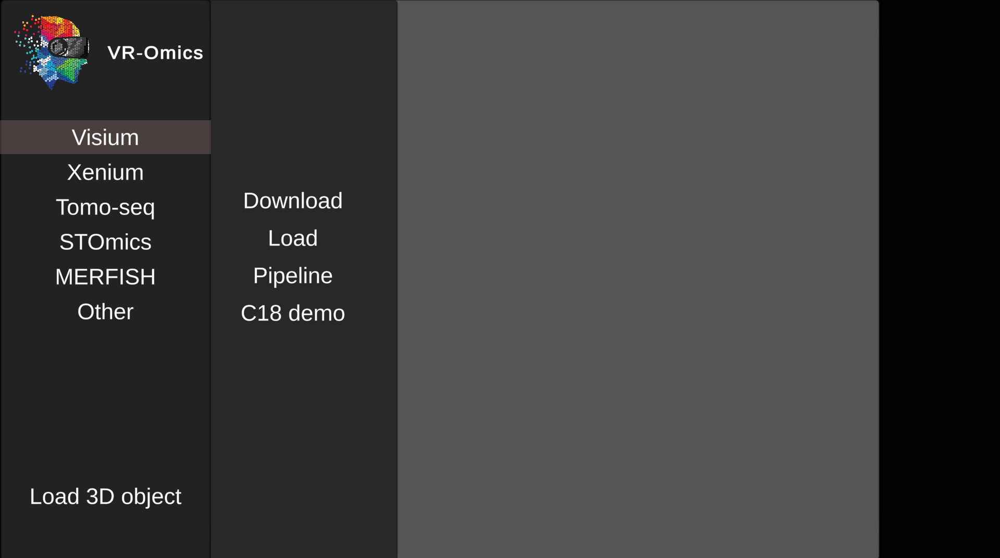
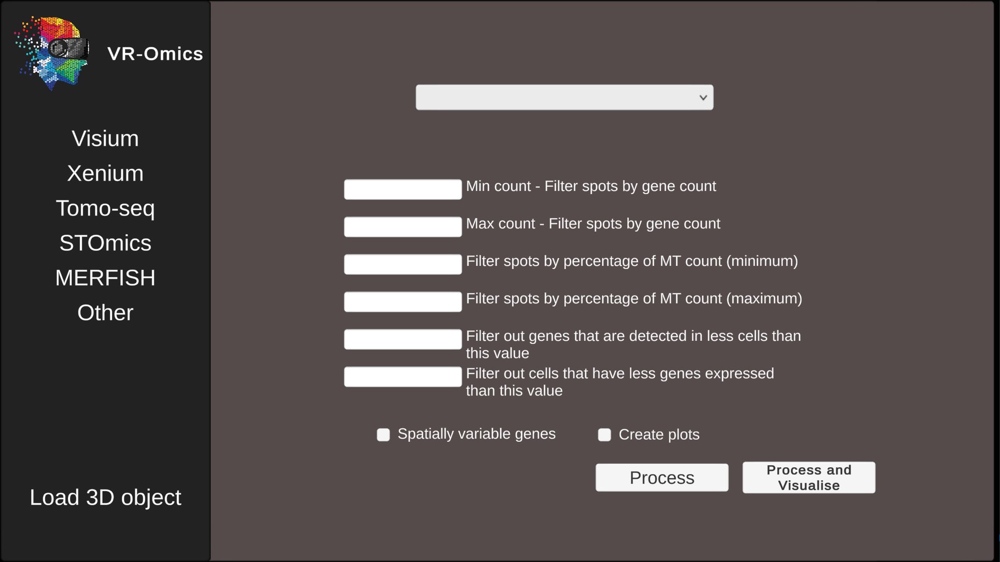
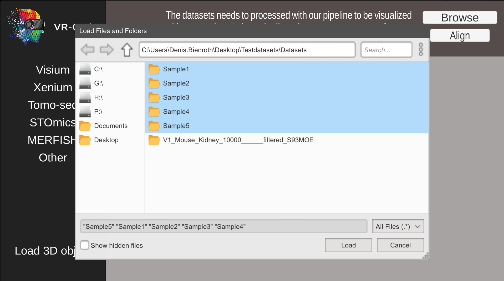
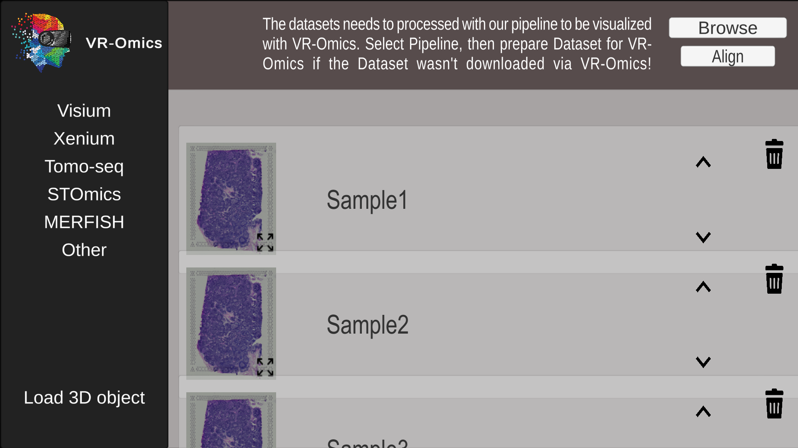
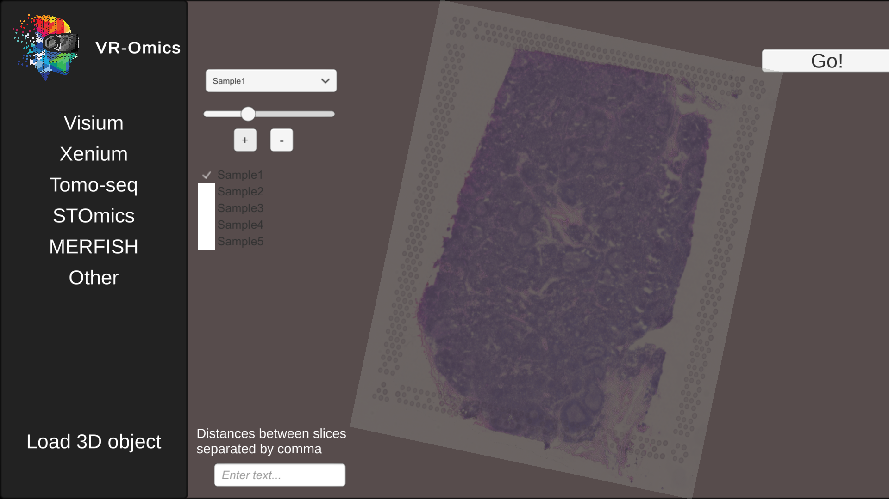
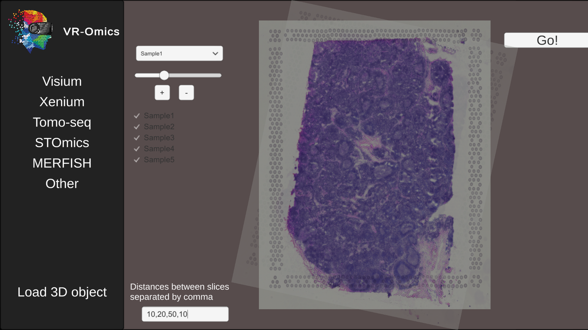
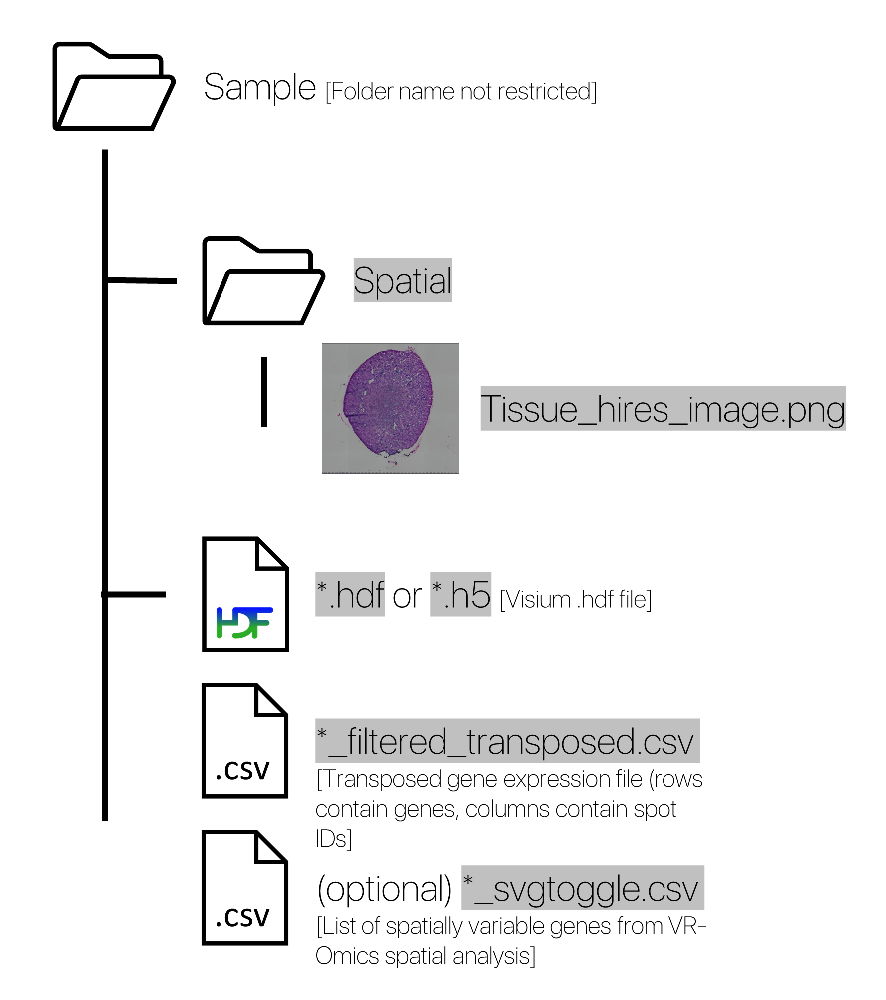

Abstract
Spatially resolved transcriptomics is an emerging class of high-throughput technologies that enable biologists to systematically investigate spatiotemporal gene expression patterns. Upon data acquisition, one major hurdle is the subsequent interpretation and visualization of the datasets acquired. To address this challenge, we present a novel data visualization system with interactive functionalities in virtual reality, using an embedded automated workflow for analysis and data processing. The application is designed to help biologists to analyse and interpret spatially resolved transcriptomic datasets. Supported are various technologies such as Visium and Xenium by 10X Genomics, STOmics by BGI, MERFISH by VIZGEN or Tomo-seq. The system is implemented as a local 2D desktop application or as an immersive environment using head-mounted display virtual reality. This allows biologists to interact with the data in novel ways not previously possible, which includes visually exploring the gene expression patterns of an organ and comparing genes based on their 3D expression profiles.

Documentation
Setup
Using the Automated Workflow
Visium
Download:
| 1 | Download dataset without filter or spatial analysis |
|
The dropdown contains all publicly published datasets from 10Xgenomics and will be automatically updated if new datasets are being published.  |
|---|---|---|---|
| 2 | Download and filter dataset
Combinable with: Spatial Analysis Output Plots Filter |
|
 |
| 3 | Download dataset and perform spatial analysis
Combinable with: Filter Output Plots |
|
|
| 4 | Download data and include output plots
Combinable with: Filter Spatial Analysis |
|
The automated workflow will produce a variety of output plots including:
|
Load:
| 1 | Load multiple Visium datasets |
|
* The folder will be in the right format if the sample was downloaded using the VR-Omics Automated Workflow or the Sample has been processed using the Automated Workflow beforehand. |
|---|---|---|---|
| 2 | Select sample folders | Select all sample folders in the Explorer menu and click Load |  |
| 3 | Arrange the order of the samples |
Each sample will be shown in an individual container, showing the respective H&E stain image, the name of the sample, and the order in how the samples should be mapped into 3D context from top town. Arrange the order of the samples by clicking ˄ or ˅. Delte a sample by pressing the bin button 🗑. The H&E image can be expanded by clicking the expand button on the image. |
 |
| 4 | Rotate the samples in the 3D mapping tool |
From the dropdown select which sample to operate on, all other samples are fixed. Use the slider to set the transparency of the current selected sample. Tick the boxes of each sample that currently should be visualised. All unticked samples will be invisible. Use the + Button to rotate the slice clockwise or the - Button to rotate it counter clockwise. This allows aligning the samples if they have been misplaced or rotatet on the capture area. The slices can still be rotated in the VR-Omics Visualiser later to further adjust them. |
 |
| 5 | Set the distances between the samples |
Int the text box at the bottom left enter the distances between the samples. The distances are applied from front to back. The first value sets the distance between the first and the secon slide. The second value sets the distance between slice two and three. Enter the values separated by a comma (e. g. 10,20,50,10) Click the Go! button if all adjustments are made to visualise the combined dataset in the VR-Omics Visualiser. |
 |
Setting filter parameters:
Visium Sample Folder Format
Visium folder required format
Please ensure this strucutre of your Visium data to use the VR-Omics Visualiser. This structure will automatically be generated by all sample datasets that are either downloaded or processed using the VR-Omics Automated Workflow.
Text highlighted in grey refers to a specific file name that needs to be named with this ending to be fined by VR-Omics.
Xenium
Tomo-seq
STOmics
MERFISH
Other - Custom data
Visualisation
Visium
Xenium
Tomo-seq
STOmics
MERFISH
Other - Custom data
Address
Murdoch Children's Research Institute, Parkville, Melbourne
denis.bienroth@mcri.edu.au